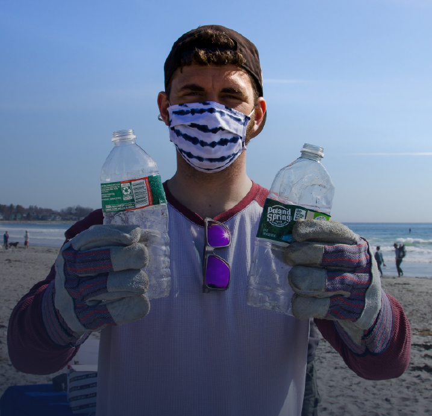

EVENTO
TOUR DE LIMPIEZA DE CANAL
Extraemos una amplia gama de desechos de las vías fluviales (¡desde juguetes hasta cascos de motocicletas!). Reciclamos todo lo que podemos a nivel local: entre el 19 y el 25% de los desechos recolectados. Convertimos el resto en energía localmente para asegurarnos de que no termine en el sistema fluvial y siga la contaminación.
INSCRIBITE
Haz click para ver detalle de la campaña

